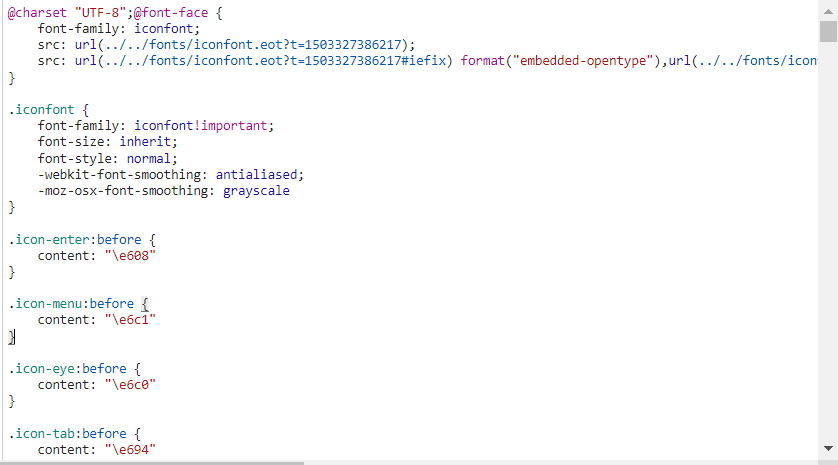
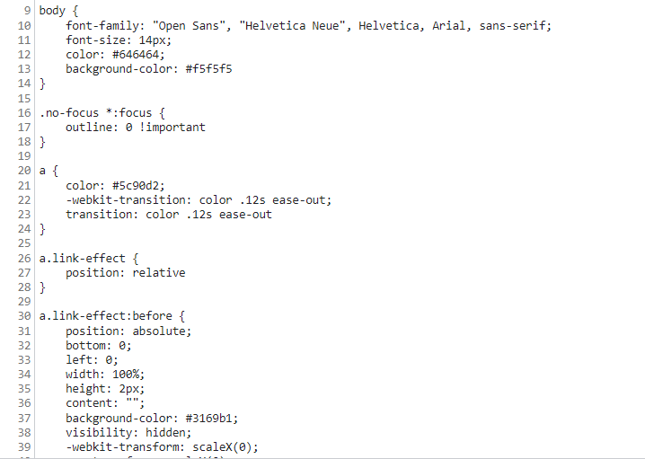

css样式没生效问题排查
背景
公司的php老项目，clone下来后，配置php运行环境，安装glup，配置host文件和nginx代理，成功运行后，打开网页却发现样式没有生效。
问题排查过程
- 打开控制台-网络-css，发现css文件是有加载的（加载的css文件也在本地，通过配置host和nginx访问），也就说明link标签引用的css路径是没有错的。
- 由于css内容较复杂，直接修改其中一个css文件内容为
1
2
3body {
background-color: red;
} - 重新加载页面，发现网页body元素的
background-color没有修改为red。 - 我们知道，网页渲染过程是dom解析 + css解析后，将解析结果合并（详细过程），那么是否css解析出了问题，或者合并过程出了问题呢。在控制台输入
document.styleSheets，发现加载的css文件并没有被成功解析出来（rules为空），考虑是否文件编码问题导致文件无法正确解析。查看控制台内请求到的css文件内容，对比其他网站的css文件内容，发现正常css文件颜色丰富（类名、属性名、属性值等颜色不同），非正常css文件只有黑色的文字。看来果然有可能是文件编码问题。

 - 修改文件编码：将文件使用utf-8编码另存，刷新网页，样式依旧加载失败；在link标签中增加
charset="utf-8"，还是失败。 - 查看文件请求的请求头和响应头，发现响应头
Content-Type: application/octet-stream，按常理来说css文件应该是text/css类型。 - 查看nginx配置，找到元凶
1
2
3
4
5http {
...
default_type application/octet-stream;
...
} - 这时我还想不修改nginx来解决，做了最后的挣扎。尝试在link标签内增加
type="text/css"，失败。 - 最后，老老实实修改nginx，对css文件进行处理。mime.types文件如下
1
2
3
4
5http {
...
include mime.types; # 将不同文件的类型和响应的content-type做映射
...
}or1
2
3
4
5
6
7
8
9
10
11
12
13
14
15
16
17
18
19
20
21
22
23
24
25
26
27
28
29
30
31
32
33
34
35
36
37
38
39
40
41
42
43
44
45
46
47
48
49
50
51
52
53
54
55
56
57
58
59
60
61
62
63
64
65
66
67
68
69
70
71
72
73
74
75
76
77
78
79
80
81
82
83
84
85
86
87
88
89
90
91
92
93
94
95
96
97types {
text/html html htm shtml;
text/css css;
text/xml xml;
image/gif gif;
image/jpeg jpeg jpg;
application/javascript js;
application/atom+xml atom;
application/rss+xml rss;
text/mathml mml;
text/plain txt;
text/vnd.sun.j2me.app-descriptor jad;
text/vnd.wap.wml wml;
text/x-component htc;
image/png png;
image/svg+xml svg svgz;
image/tiff tif tiff;
image/vnd.wap.wbmp wbmp;
image/webp webp;
image/x-icon ico;
image/x-jng jng;
image/x-ms-bmp bmp;
font/woff woff;
font/woff2 woff2;
application/java-archive jar war ear;
application/json json;
application/mac-binhex40 hqx;
application/msword doc;
application/pdf pdf;
application/postscript ps eps ai;
application/rtf rtf;
application/vnd.apple.mpegurl m3u8;
application/vnd.google-earth.kml+xml kml;
application/vnd.google-earth.kmz kmz;
application/vnd.ms-excel xls;
application/vnd.ms-fontobject eot;
application/vnd.ms-powerpoint ppt;
application/vnd.oasis.opendocument.graphics odg;
application/vnd.oasis.opendocument.presentation odp;
application/vnd.oasis.opendocument.spreadsheet ods;
application/vnd.oasis.opendocument.text odt;
application/vnd.openxmlformats-officedocument.presentationml.presentation
pptx;
application/vnd.openxmlformats-officedocument.spreadsheetml.sheet
xlsx;
application/vnd.openxmlformats-officedocument.wordprocessingml.document
docx;
application/vnd.wap.wmlc wmlc;
application/x-7z-compressed 7z;
application/x-cocoa cco;
application/x-java-archive-diff jardiff;
application/x-java-jnlp-file jnlp;
application/x-makeself run;
application/x-perl pl pm;
application/x-pilot prc pdb;
application/x-rar-compressed rar;
application/x-redhat-package-manager rpm;
application/x-sea sea;
application/x-shockwave-flash swf;
application/x-stuffit sit;
application/x-tcl tcl tk;
application/x-x509-ca-cert der pem crt;
application/x-xpinstall xpi;
application/xhtml+xml xhtml;
application/xspf+xml xspf;
application/zip zip;
application/octet-stream bin exe dll;
application/octet-stream deb;
application/octet-stream dmg;
application/octet-stream iso img;
application/octet-stream msi msp msm;
audio/midi mid midi kar;
audio/mpeg mp3;
audio/ogg ogg;
audio/x-m4a m4a;
audio/x-realaudio ra;
video/3gpp 3gpp 3gp;
video/mp2t ts;
video/mp4 mp4;
video/mpeg mpeg mpg;
video/quicktime mov;
video/webm webm;
video/x-flv flv;
video/x-m4v m4v;
video/x-mng mng;
video/x-ms-asf asx asf;
video/x-ms-wmv wmv;
video/x-msvideo avi;
}1
2
3location ~ \.css {
default_type text/css; # 单独对css文件做处理
}
感谢您的阅读，本文由 Astar 版权所有。如若转载，请注明出处：Astar（http://example.com/2022/02/24/css%E6%A0%B7%E5%BC%8F%E6%B2%A1%E7%94%9F%E6%95%88%E9%97%AE%E9%A2%98%E6%8E%92%E6%9F%A5/）